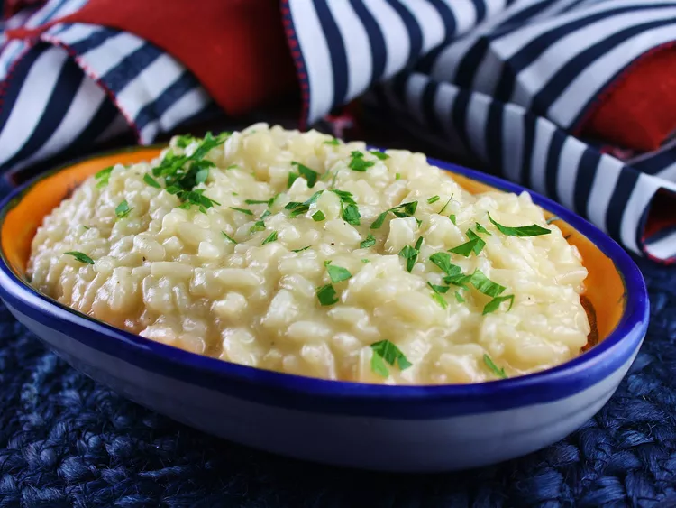

Parmesan Risotto

Description
I created this truffle risotto recipe because there's nothing quite like creamy, savory rice. It's so delicious and filling, it's almost a meal in itself! You do need to tend to the stove for 30 minutes for stirring, but it's definitely worth the effort. I used regular milk (not cream) and it was absolutely heavenly and creamy! Serve as soon as possible; otherwise, it can get very pasty.
Ingredients
- 1/4 chicken broth
- 3 tablespoons butter, divided
- 1 tablespoon olive oil
- 1/2 medium oninon, minced
- 1 1/4 cups Arborio rice
- 1/2 cup white wine
- 1/4 cup hot water, or as needed (Optional)
- 1/3 cup grtated Parmesan cheese
- 2 tablespoons white truffle oil
- 1 teaspoon milk, or as needed
- 2 tablespoons chopped fresh parsley, or to taste
- salt and ground black pepper to taste
Steps
- Heat chicken broth in a stockpot over medium-low heat until warmed, 3 to 5 minutes.
- Heat 1 tablespoon butter and olive oil in a large, heavy-bottomed pan until butter melts. Add onion and sauté until translucent, about 2 minutes. Stir in rice until coated, then cook, stirring constantly, until fragrant, about 1 minute.
- Pour wine into rice mixture; cook and stir until liquid is absorbed, about 5 minutes. Add one ladle hot broth and cook, stirring constantly, until broth is absorbed. Continue adding and stirring in one ladle broth at a time until rice is tender but firm to the bite, 20 to 30 minutes. If you run out of broth before rice is cooked, finish cooking with hot water.
- Stir in Parmesan, remaining 2 tablespoons butter, truffle oil, and milk until fully incorporated, then season with parsley, salt, and pepper. Serve immediately.